Implementacion del codigo#
import numpy as np
import pandas as pd
import seaborn as sns
import matplotlib.pyplot as plt
from sklearn.model_selection import train_test_split
from sklearn.metrics import accuracy_score, confusion_matrix, classification_report
from sklearn.preprocessing import MinMaxScaler
from sklearn.neighbors import KNeighborsClassifier
from sklearn.neighbors import KNeighborsRegressor
from sklearn.metrics import mean_squared_error
Funciones#
def Summary(data, sheet):
print(f"Hoja: {sheet}")
# Crear la tabla de resumen
resumen = {
"Cantidad de filas": data.shape[0],
"Cantidad de columnas": data.shape[1],
"Datos faltantes": data.isnull().sum().sum(),
"Filas duplicadas": data.duplicated().sum()
}
# Convertir el resumen en un DataFrame
ResumenHoja = pd.DataFrame(resumen, index=["Resumen"])
print("\nResumen:")
display(ResumenHoja)
print("\nEncabezado:")
display(data.head())
def agrupacion(df,columnas,umbral=0.02,categoria_agrupada='Otros'):
df_agrupado = df.copy()
for col in columnas:
frecuencias = df_agrupado[col].value_counts(normalize=True)
categorias_poco_frecuentes = frecuencias[frecuencias < umbral].index
df_agrupado[col] = df_agrupado[col].replace(categorias_poco_frecuentes, categoria_agrupada)
return df_agrupado
def aplicar_agrupacion(df, col, categorias_poco_frecuentes, categoria_agrupada='Otros'):
return df[col].replace(categorias_poco_frecuentes, categoria_agrupada)
Cargado de datos#
data_url = 'https://docs.google.com/spreadsheets/d/1_KCCMLmD6jYINRbLJwud-moSgEkevpdJtc8VIbZuAVM/export?format=csv'
df = pd.read_csv(data_url)
df.head()
| Marital status | Application mode | Application order | Course | Daytime/evening attendance\t | Previous qualification | Previous qualification (grade) | Nacionality | Mother's qualification | Father's qualification | ... | Curricular units 2nd sem (credited) | Curricular units 2nd sem (enrolled) | Curricular units 2nd sem (evaluations) | Curricular units 2nd sem (approved) | Curricular units 2nd sem (grade) | Curricular units 2nd sem (without evaluations) | Unemployment rate | Inflation rate | GDP | Target | |
|---|---|---|---|---|---|---|---|---|---|---|---|---|---|---|---|---|---|---|---|---|---|
| 0 | 1 | 17 | 5 | 171 | 1 | 1 | 122.0 | 1 | 19 | 12 | ... | 0 | 0 | 0 | 0 | 0.000000 | 0 | 10.8 | 1.4 | 1.74 | Dropout |
| 1 | 1 | 15 | 1 | 9254 | 1 | 1 | 160.0 | 1 | 1 | 3 | ... | 0 | 6 | 6 | 6 | 13.666667 | 0 | 13.9 | -0.3 | 0.79 | Graduate |
| 2 | 1 | 1 | 5 | 9070 | 1 | 1 | 122.0 | 1 | 37 | 37 | ... | 0 | 6 | 0 | 0 | 0.000000 | 0 | 10.8 | 1.4 | 1.74 | Dropout |
| 3 | 1 | 17 | 2 | 9773 | 1 | 1 | 122.0 | 1 | 38 | 37 | ... | 0 | 6 | 10 | 5 | 12.400000 | 0 | 9.4 | -0.8 | -3.12 | Graduate |
| 4 | 2 | 39 | 1 | 8014 | 0 | 1 | 100.0 | 1 | 37 | 38 | ... | 0 | 6 | 6 | 6 | 13.000000 | 0 | 13.9 | -0.3 | 0.79 | Graduate |
5 rows × 37 columns
df.info()
<class 'pandas.core.frame.DataFrame'>
RangeIndex: 4424 entries, 0 to 4423
Data columns (total 37 columns):
# Column Non-Null Count Dtype
--- ------ -------------- -----
0 Marital status 4424 non-null int64
1 Application mode 4424 non-null int64
2 Application order 4424 non-null int64
3 Course 4424 non-null int64
4 Daytime/evening attendance 4424 non-null int64
5 Previous qualification 4424 non-null int64
6 Previous qualification (grade) 4424 non-null float64
7 Nacionality 4424 non-null int64
8 Mother's qualification 4424 non-null int64
9 Father's qualification 4424 non-null int64
10 Mother's occupation 4424 non-null int64
11 Father's occupation 4424 non-null int64
12 Admission grade 4424 non-null float64
13 Displaced 4424 non-null int64
14 Educational special needs 4424 non-null int64
15 Debtor 4424 non-null int64
16 Tuition fees up to date 4424 non-null int64
17 Gender 4424 non-null int64
18 Scholarship holder 4424 non-null int64
19 Age at enrollment 4424 non-null int64
20 International 4424 non-null int64
21 Curricular units 1st sem (credited) 4424 non-null int64
22 Curricular units 1st sem (enrolled) 4424 non-null int64
23 Curricular units 1st sem (evaluations) 4424 non-null int64
24 Curricular units 1st sem (approved) 4424 non-null int64
25 Curricular units 1st sem (grade) 4424 non-null float64
26 Curricular units 1st sem (without evaluations) 4424 non-null int64
27 Curricular units 2nd sem (credited) 4424 non-null int64
28 Curricular units 2nd sem (enrolled) 4424 non-null int64
29 Curricular units 2nd sem (evaluations) 4424 non-null int64
30 Curricular units 2nd sem (approved) 4424 non-null int64
31 Curricular units 2nd sem (grade) 4424 non-null float64
32 Curricular units 2nd sem (without evaluations) 4424 non-null int64
33 Unemployment rate 4424 non-null float64
34 Inflation rate 4424 non-null float64
35 GDP 4424 non-null float64
36 Target 4424 non-null object
dtypes: float64(7), int64(29), object(1)
memory usage: 1.2+ MB
Analisis exploratorio de datos#
Summary(df, 'df')
Hoja: df
Resumen:
| Cantidad de filas | Cantidad de columnas | Datos faltantes | Filas duplicadas | |
|---|---|---|---|---|
| Resumen | 4424 | 37 | 0 | 0 |
Encabezado:
| Marital status | Application mode | Application order | Course | Daytime/evening attendance\t | Previous qualification | Previous qualification (grade) | Nacionality | Mother's qualification | Father's qualification | ... | Curricular units 2nd sem (credited) | Curricular units 2nd sem (enrolled) | Curricular units 2nd sem (evaluations) | Curricular units 2nd sem (approved) | Curricular units 2nd sem (grade) | Curricular units 2nd sem (without evaluations) | Unemployment rate | Inflation rate | GDP | Target | |
|---|---|---|---|---|---|---|---|---|---|---|---|---|---|---|---|---|---|---|---|---|---|
| 0 | 1 | 17 | 5 | 171 | 1 | 1 | 122.0 | 1 | 19 | 12 | ... | 0 | 0 | 0 | 0 | 0.000000 | 0 | 10.8 | 1.4 | 1.74 | Dropout |
| 1 | 1 | 15 | 1 | 9254 | 1 | 1 | 160.0 | 1 | 1 | 3 | ... | 0 | 6 | 6 | 6 | 13.666667 | 0 | 13.9 | -0.3 | 0.79 | Graduate |
| 2 | 1 | 1 | 5 | 9070 | 1 | 1 | 122.0 | 1 | 37 | 37 | ... | 0 | 6 | 0 | 0 | 0.000000 | 0 | 10.8 | 1.4 | 1.74 | Dropout |
| 3 | 1 | 17 | 2 | 9773 | 1 | 1 | 122.0 | 1 | 38 | 37 | ... | 0 | 6 | 10 | 5 | 12.400000 | 0 | 9.4 | -0.8 | -3.12 | Graduate |
| 4 | 2 | 39 | 1 | 8014 | 0 | 1 | 100.0 | 1 | 37 | 38 | ... | 0 | 6 | 6 | 6 | 13.000000 | 0 | 13.9 | -0.3 | 0.79 | Graduate |
5 rows × 37 columns
Las columnas de Curriculum units(grade) en ambos semestres no tienen un redondeo universal en los datos por lo que se realizara ese redondeo a 2 decimas debido a que son notas
df['Curricular units 1st sem (grade)']=df['Curricular units 1st sem (grade)'].round(2)
df['Curricular units 2nd sem (grade)']=df['Curricular units 2nd sem (grade)'].round(2)
df.head()
| Marital status | Application mode | Application order | Course | Daytime/evening attendance\t | Previous qualification | Previous qualification (grade) | Nacionality | Mother's qualification | Father's qualification | ... | Curricular units 2nd sem (credited) | Curricular units 2nd sem (enrolled) | Curricular units 2nd sem (evaluations) | Curricular units 2nd sem (approved) | Curricular units 2nd sem (grade) | Curricular units 2nd sem (without evaluations) | Unemployment rate | Inflation rate | GDP | Target | |
|---|---|---|---|---|---|---|---|---|---|---|---|---|---|---|---|---|---|---|---|---|---|
| 0 | 1 | 17 | 5 | 171 | 1 | 1 | 122.0 | 1 | 19 | 12 | ... | 0 | 0 | 0 | 0 | 0.00 | 0 | 10.8 | 1.4 | 1.74 | Dropout |
| 1 | 1 | 15 | 1 | 9254 | 1 | 1 | 160.0 | 1 | 1 | 3 | ... | 0 | 6 | 6 | 6 | 13.67 | 0 | 13.9 | -0.3 | 0.79 | Graduate |
| 2 | 1 | 1 | 5 | 9070 | 1 | 1 | 122.0 | 1 | 37 | 37 | ... | 0 | 6 | 0 | 0 | 0.00 | 0 | 10.8 | 1.4 | 1.74 | Dropout |
| 3 | 1 | 17 | 2 | 9773 | 1 | 1 | 122.0 | 1 | 38 | 37 | ... | 0 | 6 | 10 | 5 | 12.40 | 0 | 9.4 | -0.8 | -3.12 | Graduate |
| 4 | 2 | 39 | 1 | 8014 | 0 | 1 | 100.0 | 1 | 37 | 38 | ... | 0 | 6 | 6 | 6 | 13.00 | 0 | 13.9 | -0.3 | 0.79 | Graduate |
5 rows × 37 columns
debemos tomar en cuenta que algunas de las variables numericas en realidad tienen categorias asignadas a cada uno de sus datos. Por lo que debemos tener cuidado al tratarlos
Se realizara primero el analisis de las variables numericas que no tienen categorias asignadas a ellas
numericas=['Previous qualification (grade)','Admission grade','Age at enrollment','Curricular units 1st sem (approved)','Curricular units 1st sem (credited)','Curricular units 1st sem (enrolled)','Curricular units 1st sem (evaluations)','Curricular units 1st sem (without evaluations)',
'Curricular units 2nd sem (approved)','Curricular units 2nd sem (credited)','Curricular units 2nd sem (enrolled)','Curricular units 2nd sem (evaluations)','Curricular units 2nd sem (without evaluations)','GDP']
df[numericas].describe()
| Previous qualification (grade) | Admission grade | Age at enrollment | Curricular units 1st sem (approved) | Curricular units 1st sem (credited) | Curricular units 1st sem (enrolled) | Curricular units 1st sem (evaluations) | Curricular units 1st sem (without evaluations) | Curricular units 2nd sem (approved) | Curricular units 2nd sem (credited) | Curricular units 2nd sem (enrolled) | Curricular units 2nd sem (evaluations) | Curricular units 2nd sem (without evaluations) | GDP | |
|---|---|---|---|---|---|---|---|---|---|---|---|---|---|---|
| count | 4424.000000 | 4424.000000 | 4424.000000 | 4424.000000 | 4424.000000 | 4424.000000 | 4424.000000 | 4424.000000 | 4424.000000 | 4424.000000 | 4424.000000 | 4424.000000 | 4424.000000 | 4424.000000 |
| mean | 132.613314 | 126.978119 | 23.265145 | 4.706600 | 0.709991 | 6.270570 | 8.299051 | 0.137658 | 4.435805 | 0.541817 | 6.232143 | 8.063291 | 0.150316 | 0.001969 |
| std | 13.188332 | 14.482001 | 7.587816 | 3.094238 | 2.360507 | 2.480178 | 4.179106 | 0.690880 | 3.014764 | 1.918546 | 2.195951 | 3.947951 | 0.753774 | 2.269935 |
| min | 95.000000 | 95.000000 | 17.000000 | 0.000000 | 0.000000 | 0.000000 | 0.000000 | 0.000000 | 0.000000 | 0.000000 | 0.000000 | 0.000000 | 0.000000 | -4.060000 |
| 25% | 125.000000 | 117.900000 | 19.000000 | 3.000000 | 0.000000 | 5.000000 | 6.000000 | 0.000000 | 2.000000 | 0.000000 | 5.000000 | 6.000000 | 0.000000 | -1.700000 |
| 50% | 133.100000 | 126.100000 | 20.000000 | 5.000000 | 0.000000 | 6.000000 | 8.000000 | 0.000000 | 5.000000 | 0.000000 | 6.000000 | 8.000000 | 0.000000 | 0.320000 |
| 75% | 140.000000 | 134.800000 | 25.000000 | 6.000000 | 0.000000 | 7.000000 | 10.000000 | 0.000000 | 6.000000 | 0.000000 | 7.000000 | 10.000000 | 0.000000 | 1.790000 |
| max | 190.000000 | 190.000000 | 70.000000 | 26.000000 | 20.000000 | 26.000000 | 45.000000 | 12.000000 | 20.000000 | 19.000000 | 23.000000 | 33.000000 | 12.000000 | 3.510000 |
df[numericas].hist(bins=30,figsize=(12,8))
plt.tight_layout()
plt.suptitle('Distribucion de variables numericas',y=1.02)
plt.show()
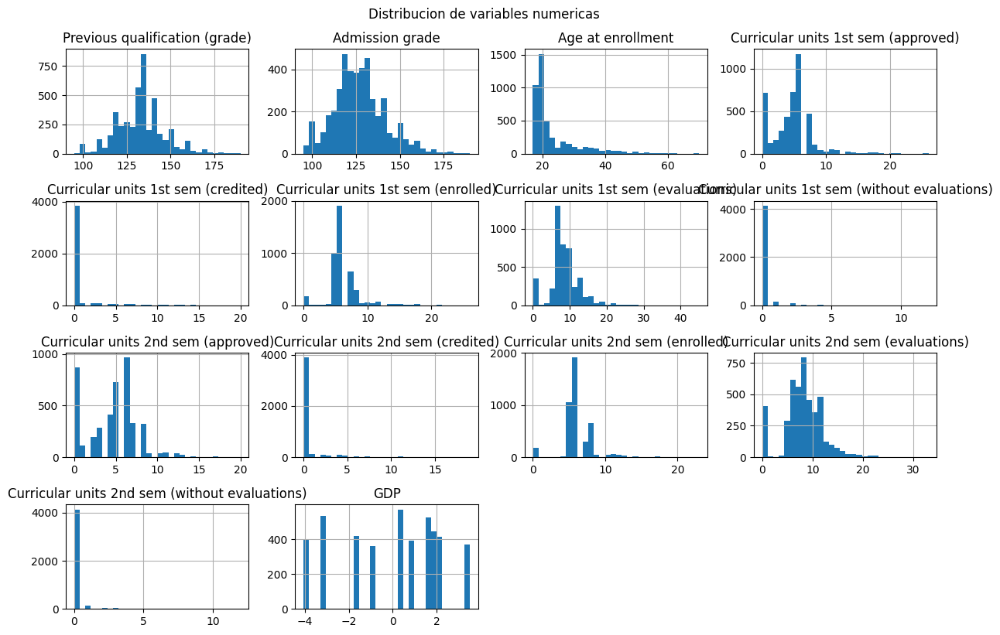
añadimos tambien las que representan porcentajes
sns.histplot(data=df, x='Unemployment rate', bins=30, kde=True)
plt.title('Distribución de la Tasa de desempleo')
plt.xlabel('Unemployment Rate (%)')
plt.ylabel('Frecuencia')
plt.axvline(0, color='red', linestyle='--', label='0%')
plt.legend()
plt.show()
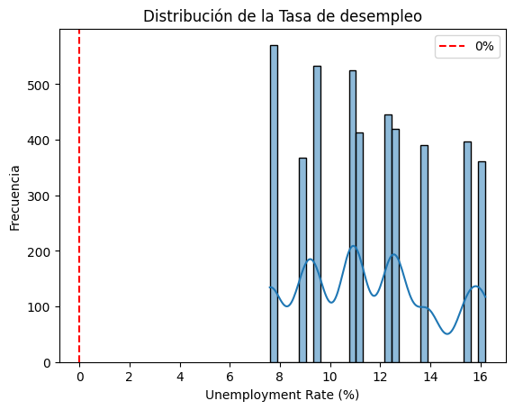
sns.histplot(data=df, x='Inflation rate', bins=30, kde=True)
plt.title('Distribución de la Tasa de Inflación')
plt.xlabel('Inflation Rate (%)')
plt.ylabel('Frecuencia')
plt.axvline(0, color='red', linestyle='--', label='0%')
plt.legend()
plt.show()
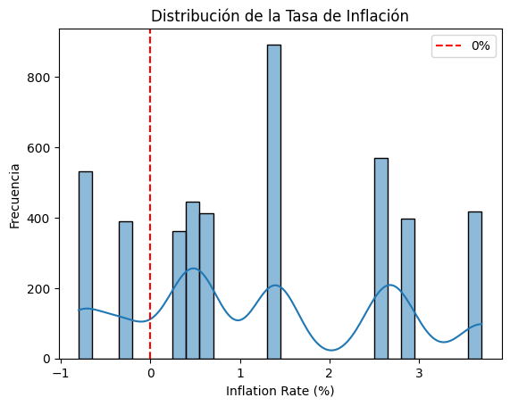
realizamos boxplots para determinar la presencia de outliers en las variables numericas
for numerica in numericas:
sns.boxplot(data=df,y=numerica)
plt.title(f'Boxplot de {numerica}')
plt.show()
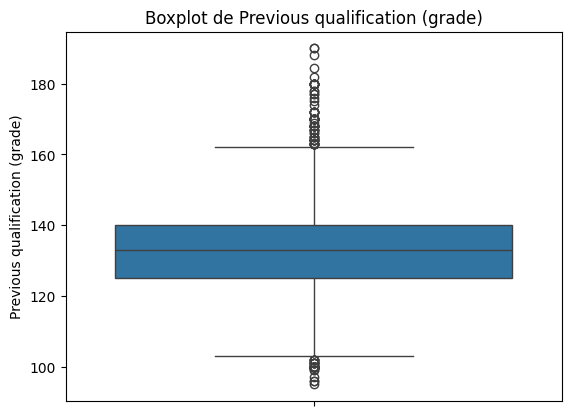
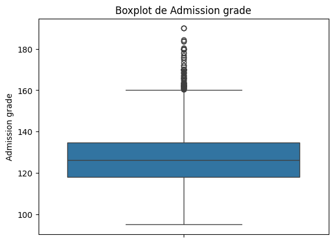
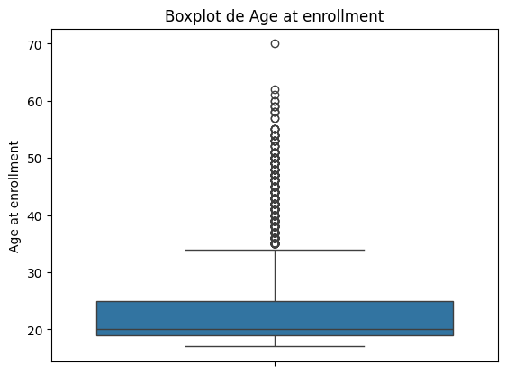
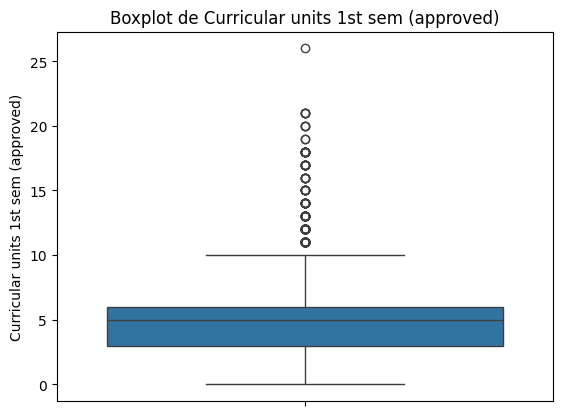
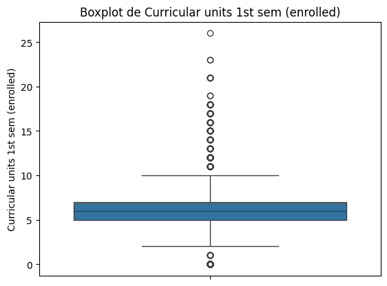
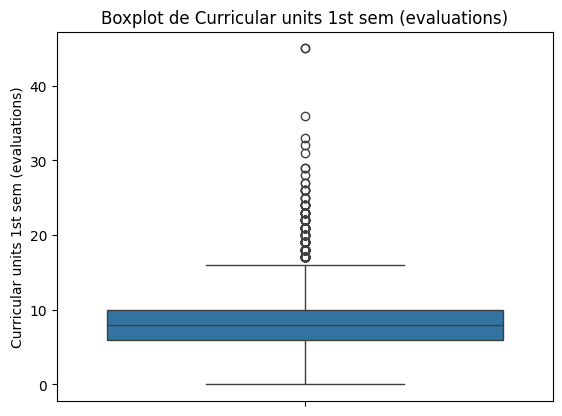
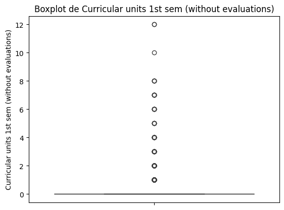
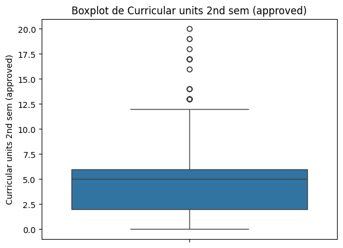
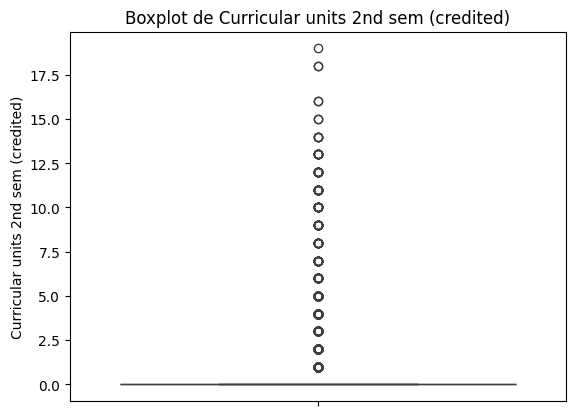
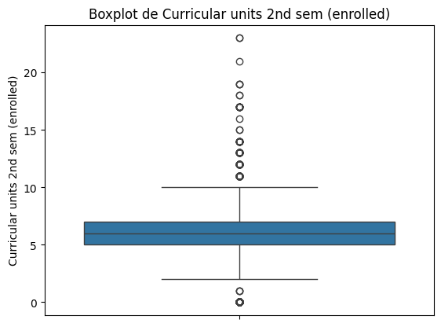
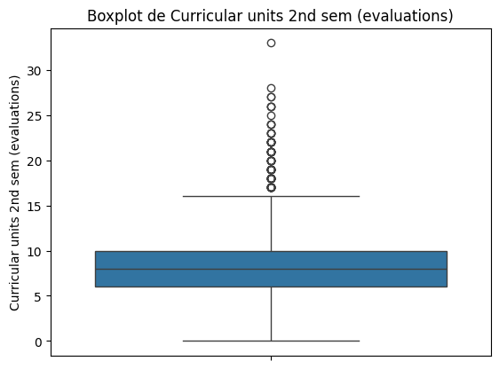
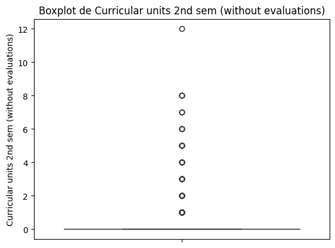
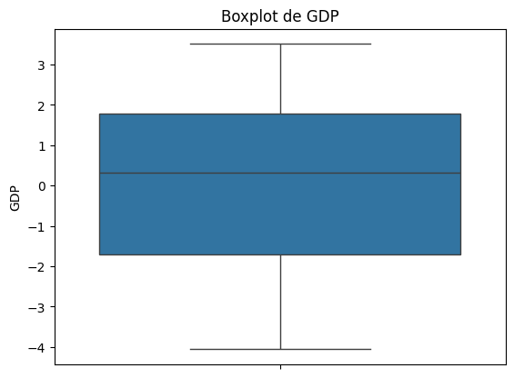
realizamos lo mismo con las variables de porcentajes
plt.figure(figsize=(4, 6))
sns.boxplot(data=df, y='Unemployment rate', color='skyblue')
plt.title('Boxplot de la Tasa de Desempleo')
plt.ylabel('Unemployment Rate (%)')
plt.show()
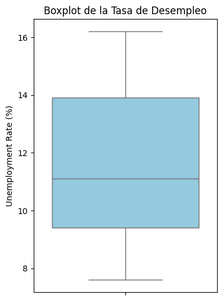
plt.figure(figsize=(4, 6))
sns.boxplot(data=df, y='Inflation rate', color='skyblue')
plt.title('Boxplot de la Tasa de Inflacion')
plt.ylabel('Inflation Rate (%)')
plt.show()
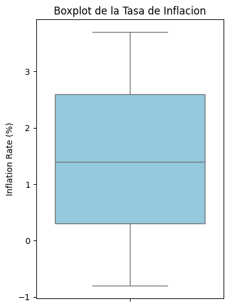
codificamos las variables que tienen categorias asociadas a ellas y las variables categoricas que existen en el dataframe
Se verifica la distribucion de cada categoria utilizando value_counts
categoricas=['Marital status','Application mode','Application order','Course','Daytime/evening attendance\t','Previous qualification','Nacionality',"Mother's qualification","Father's qualification","Mother's occupation","Father's occupation",'Displaced','Educational special needs','Debtor','Tuition fees up to date','Gender','Scholarship holder','International','Target']
for col in categoricas:
print(df[col].value_counts())
sns.countplot(data=df, x=col, order=df[col].value_counts().index)
plt.title(f'Distribución de {col}')
plt.xticks(rotation=45)
plt.show()
Marital status
1 3919
2 379
4 91
5 25
6 6
3 4
Name: count, dtype: int64
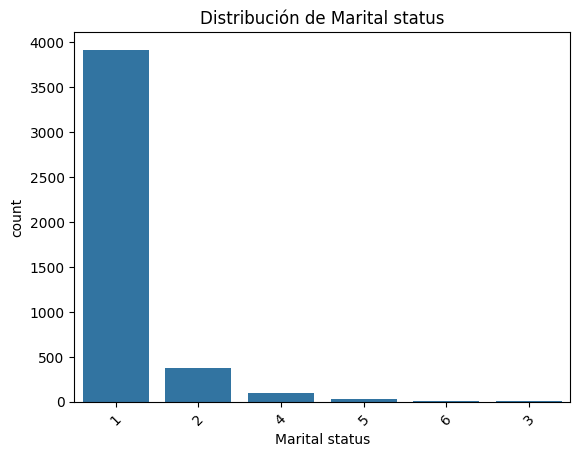
Application mode
1 1708
17 872
39 785
43 312
44 213
7 139
18 124
42 77
51 59
16 38
53 35
15 30
5 16
10 10
2 3
57 1
26 1
27 1
Name: count, dtype: int64
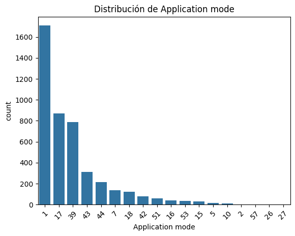
Application order
1 3026
2 547
3 309
4 249
5 154
6 137
9 1
0 1
Name: count, dtype: int64
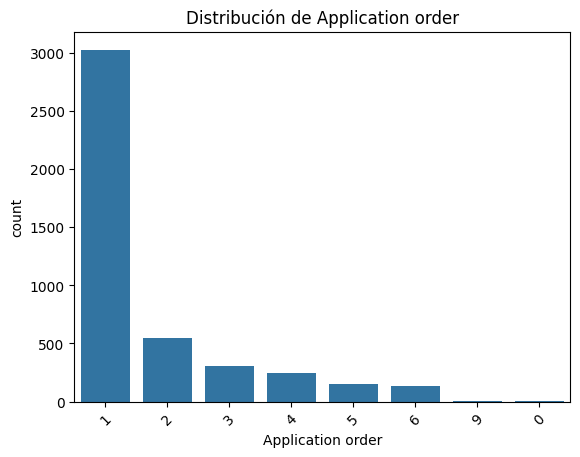
Course
9500 766
9147 380
9238 355
9085 337
9773 331
9670 268
9991 268
9254 252
9070 226
171 215
8014 215
9003 210
9853 192
9119 170
9130 141
9556 86
33 12
Name: count, dtype: int64
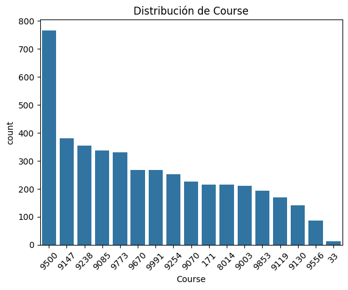
Daytime/evening attendance\t
1 3941
0 483
Name: count, dtype: int64
c:\Users\migue\miniconda3\envs\ml_venv\lib\site-packages\IPython\core\pylabtools.py:152: UserWarning: Glyph 9 ( ) missing from font(s) DejaVu Sans.
fig.canvas.print_figure(bytes_io, **kw)
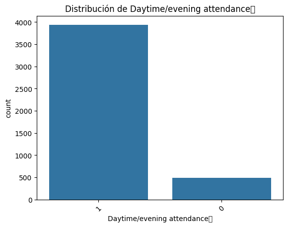
Previous qualification
1 3717
39 219
19 162
3 126
12 45
40 40
42 36
2 23
6 16
9 11
4 8
38 7
43 6
10 4
15 2
5 1
14 1
Name: count, dtype: int64
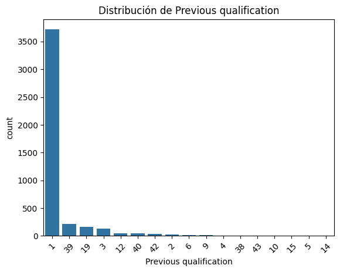
Nacionality
1 4314
41 38
26 14
6 13
22 13
24 5
100 3
11 3
103 3
62 2
21 2
101 2
25 2
2 2
105 2
32 1
13 1
109 1
108 1
14 1
17 1
Name: count, dtype: int64
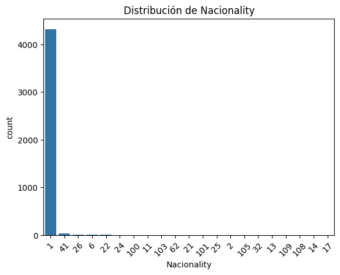
Mother's qualification
1 1069
37 1009
19 953
38 562
3 438
34 130
2 83
4 49
12 42
5 21
40 9
9 8
39 8
41 6
42 4
6 4
43 4
30 3
35 3
36 3
11 3
29 3
10 3
14 2
18 1
22 1
27 1
26 1
44 1
Name: count, dtype: int64
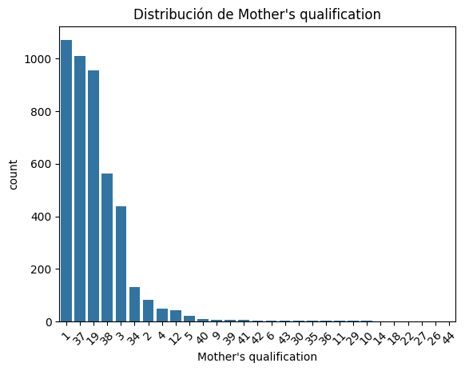
Father's qualification
37 1209
19 968
1 904
38 702
3 282
34 112
2 68
4 39
12 38
39 20
5 18
11 10
36 8
9 5
40 5
14 4
30 4
22 4
29 3
26 2
43 2
41 2
10 2
6 2
35 2
20 1
42 1
18 1
13 1
25 1
44 1
33 1
27 1
31 1
Name: count, dtype: int64
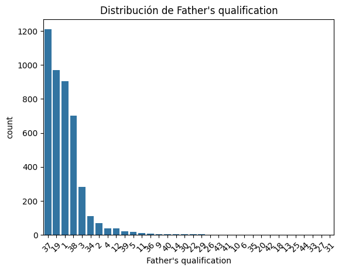
Mother's occupation
9 1577
4 817
5 530
3 351
2 318
7 272
0 144
1 102
6 91
90 70
8 36
191 26
99 17
194 11
141 8
123 7
144 6
175 5
192 5
10 4
134 4
193 4
151 3
132 3
143 3
153 2
152 2
122 2
125 1
173 1
131 1
171 1
Name: count, dtype: int64
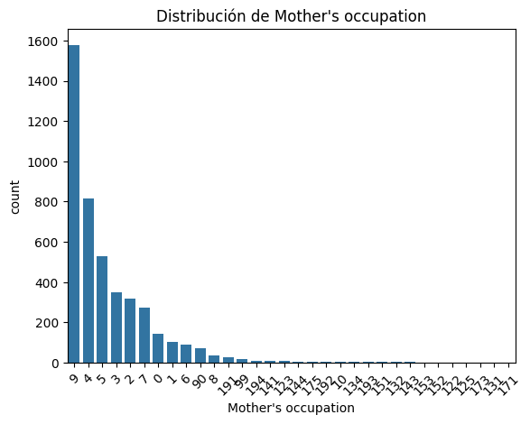
Father's occupation
9 1010
7 666
5 516
4 386
3 384
8 318
10 266
6 242
2 197
1 134
0 128
90 65
99 19
193 15
144 8
171 8
192 6
163 5
103 4
175 4
181 3
135 3
152 3
183 3
123 3
112 2
194 2
182 2
172 2
151 2
102 2
122 2
124 1
131 1
195 1
121 1
132 1
161 1
143 1
134 1
153 1
174 1
141 1
114 1
101 1
154 1
Name: count, dtype: int64
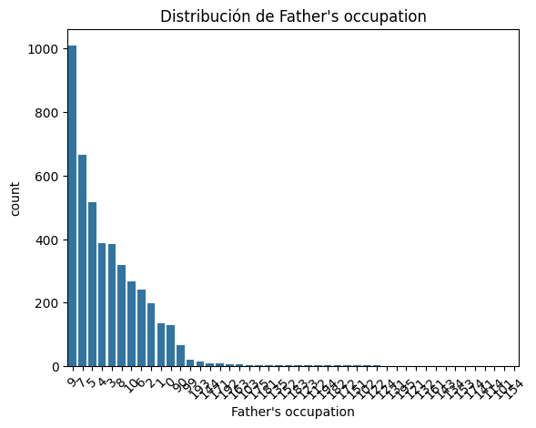
Displaced
1 2426
0 1998
Name: count, dtype: int64
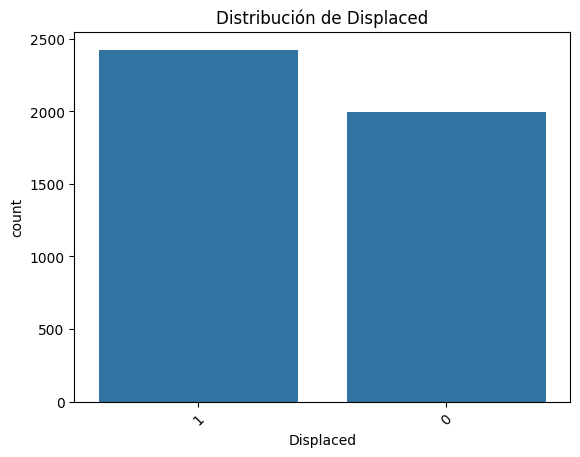
Educational special needs
0 4373
1 51
Name: count, dtype: int64
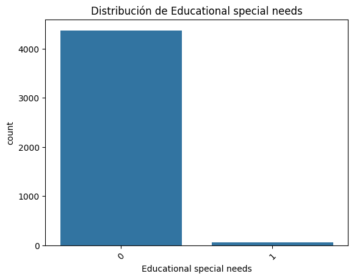
Debtor
0 3921
1 503
Name: count, dtype: int64
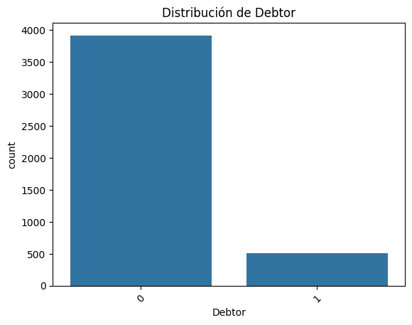
Tuition fees up to date
1 3896
0 528
Name: count, dtype: int64
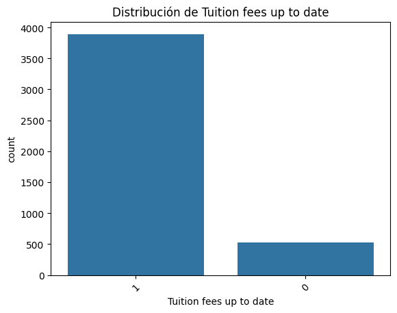
Gender
0 2868
1 1556
Name: count, dtype: int64
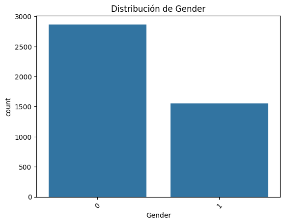
Scholarship holder
0 3325
1 1099
Name: count, dtype: int64
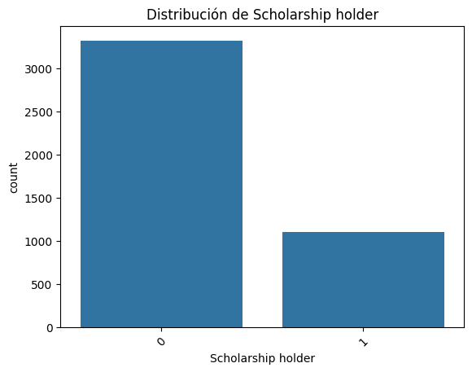
International
0 4314
1 110
Name: count, dtype: int64
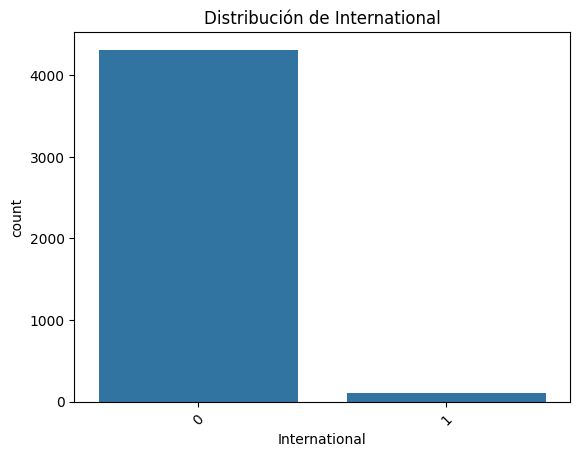
Target
Graduate 2209
Dropout 1421
Enrolled 794
Name: count, dtype: int64
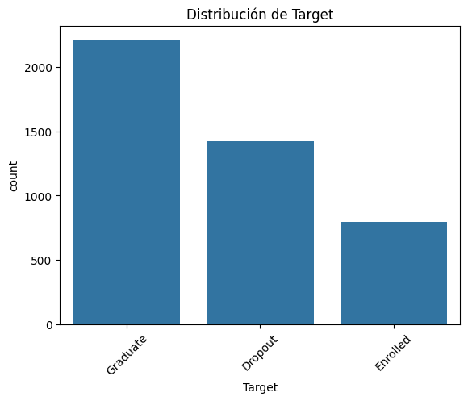
Realizamos la matriz de correlacion
df_corr=df.drop(columns=['Target'])
matriz_corr=df_corr.corr()
plt.figure(figsize=(12,8))
sns.heatmap(matriz_corr, annot=True, cmap="coolwarm", fmt=".2f")
plt.show()
c:\Users\migue\miniconda3\envs\ml_venv\lib\site-packages\seaborn\utils.py:61: UserWarning: Glyph 9 ( ) missing from font(s) DejaVu Sans.
fig.canvas.draw()
c:\Users\migue\miniconda3\envs\ml_venv\lib\site-packages\IPython\core\pylabtools.py:152: UserWarning: Glyph 9 ( ) missing from font(s) DejaVu Sans.
fig.canvas.print_figure(bytes_io, **kw)
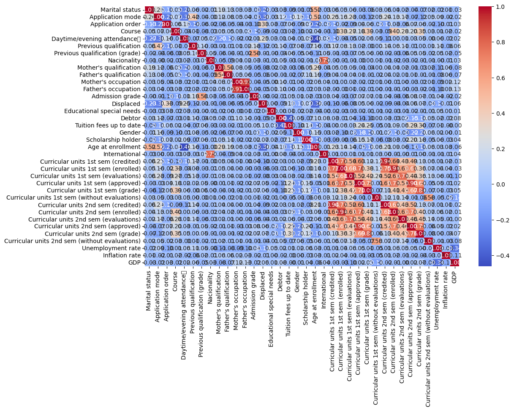
Podemos observar que las variables academicas estan fuertemente correlacionadas entre si y las variables demograficas no tienen una correlacion muy grande con el desempeño academico
#Division de datos
Realizamos la division de los datos antes de realizar la codificacion y la estandarizacion de variables para evitar data leakage utilizando train_test_split
##Clasificacion
X_clas=df.drop(columns=['Target'])
Y_clas=df['Target']
X_train_clas, X_test_clas, y_train_clas, y_test_clas = train_test_split(X_clas,Y_clas, test_size=0.2, random_state=42, stratify=Y_clas)
#Regresion
Inicialmente tenemos que crear una nueva variable promedio final solicitada por el ejercicio
a = promedio primer semestre b = promedio segundo semestre \(promedio final = (a+b)/2\)
promedio_final = df['Curricular units 1st sem (grade)'] + df['Curricular units 2nd sem (grade)'] / 2
promedio_final.head()
0 0.000
1 20.835
2 0.000
3 19.630
4 18.830
dtype: float64
X_reg= df.drop(columns=['Curricular units 1st sem (grade)','Curricular units 2nd sem (grade)'])
Y_reg= promedio_final
X_train_reg, X_test_reg, y_train_reg, y_test_reg = train_test_split(X_reg,Y_reg, test_size=0.2, random_state=42, stratify=Y_clas)
#Preprocesamiento de datos
Ahora realizamos el preprocesamiento de datos
Las variables binarias ya estan codificadas como 0 y 1 por lo que se mantienen igual
La variable target y tenemos que reetiquetarla debido a que el objetivo del modelo es determinar si el estudiante es Dropout
y_train_clas = y_train_clas.apply(lambda x: 1 if x == 'Dropout' else 0)
y_test_clas = y_test_clas.apply(lambda x: 1 if x == 'Dropout' else 0)
Ahora codificamos las variables categoricas empezando por las nominales
Para variables nominales que tengan mas de 15 categorias, podemos agrupar las menos relevantes para luego aplicar one-hot encoding. De esta manera podemos reducirla dimensionalidad y mejorar la calidad de las distancias al aplicar el modelo de KNN
columnas_agrupar=['Application mode','Course','Nacionality',"Mother's occupation","Father's occupation"]
X_train_agrupado=agrupacion(X_train_clas,columnas_agrupar,umbral=0.02,categoria_agrupada='-1')
X_test_agrupado=X_test_clas.copy()
for col in columnas_agrupar:
freqs_train = X_train_clas[col].value_counts(normalize=True)
cat_poco_freq = freqs_train[freqs_train < 0.02].index
X_test_agrupado[col] = aplicar_agrupacion(X_test_clas, col, cat_poco_freq)
X_train_ohe = pd.get_dummies(X_train_agrupado,columns=columnas_agrupar)
X_test_ohe = pd.get_dummies(X_test_agrupado,columns=columnas_agrupar)
X_train_ohe, X_test_ohe = X_train_ohe.align(X_test_ohe, join='left', axis=1, fill_value=0)
Para las variables ordinales se les realiza el mapeo de las categorias para respetar el orden existente, para luego reemplazarlo en el train y el test
mapeo_educativo_padres = {
# 0 = Sin educación
35: 0,
36: 0,
# 1 = Básica primaria incompleta
37: 1,
# 2 = Básica primaria completa
38: 2,
11: 2,
26: 2,
30: 2,
# 3 = Secundaria incompleta
29: 3,
14: 3,
10: 3,
12: 3,
13: 3,
25: 3,
# 4 = Secundaria completa
19: 4,
27: 4,
1: 4,
18: 4,
20: 4,
# 5 = Técnico/profesional incompleto
22: 5,
39: 5,
31: 5,
# 6 = Técnico/profesional completo
40: 6,
41: 6,
42: 6,
33: 6,
# 7 = Universitario incompleto
9: 7,
# 8 = Universitario completo
2: 8,
3: 8,
# 9 = Postgrado
4: 9,
43: 9,
5: 9,
44: 9,
# Desconocido
34: None
}
X_train_ohe["Mother's qualification"]=X_train_ohe["Mother's qualification"].map(mapeo_educativo_padres)
X_train_ohe["Father's qualification"]=X_train_ohe["Father's qualification"].map(mapeo_educativo_padres)
X_test_ohe["Mother's qualification"]=X_test_ohe["Mother's qualification"].map(mapeo_educativo_padres)
X_test_ohe["Father's qualification"]=X_test_ohe["Father's qualification"].map(mapeo_educativo_padres)
mediana_madre=X_train_ohe["Mother's qualification"].median()
mediana_padre=X_train_ohe["Father's qualification"].median()
X_train_ohe["Mother's qualification"] = X_train_ohe["Mother's qualification"].fillna(mediana_madre)
X_train_ohe["Father's qualification"] = X_train_ohe["Father's qualification"].fillna(mediana_padre)
X_test_ohe["Mother's qualification"] = X_test_ohe["Mother's qualification"].fillna(mediana_madre)
X_test_ohe["Father's qualification"] = X_test_ohe["Father's qualification"].fillna(mediana_padre)
X_train_OH = pd.get_dummies(X_train_ohe,'Marital status')
X_test_OH = pd.get_dummies(X_test_ohe,'Marital status')
Con previous_qualification como existen algunas categorias que en los de los padres no estan se realiza su mapeo por separado
map_educacion = {
# 1 = Educación básica incompleta o en curso
9: 1,
10: 1,
12: 1,
15: 1,
# 2 = Educación básica completa
38: 2,
19: 2,
14: 2,
# 3 = Secundaria completa
1: 3,
# 4 = Educación técnica / profesional
39: 4,
42: 4,
# 5 = Educación superior - grado / licenciatura
2: 5,
3: 5,
40: 5,
# 6 = Educación superior - máster
4: 6,
43: 6,
# 7 = Educación superior - doctorado
5: 7,
# 9 = Otro / Ambiguo
6: 9,
}
X_train_OH['Previous qualification']=X_train_OH['Previous qualification'].map(map_educacion)
X_test_OH['Previous qualification']=X_test_OH['Previous qualification'].map(map_educacion)
Ya se codificaron todas las categoricas. Por lo tanto falta escalar las variables numericas y las variables mapeadas para poder utilizar KNN
Numericas=['Application order','Previous qualification','Previous qualification (grade)',"Mother's qualification","Father's qualification",'Admission grade','Age at enrollment','Curricular units 1st sem (approved)','Curricular units 1st sem (credited)','Curricular units 1st sem (enrolled)','Curricular units 1st sem (evaluations)','Curricular units 1st sem (without evaluations)',
'Curricular units 2nd sem (approved)','Curricular units 2nd sem (credited)','Curricular units 2nd sem (enrolled)','Curricular units 2nd sem (evaluations)','Curricular units 2nd sem (without evaluations)','Unemployment rate','Inflation rate','GDP']
scaler=MinMaxScaler()
X_train_OH[Numericas] = scaler.fit_transform(X_train_OH[Numericas])
X_test_OH[Numericas] = scaler.transform(X_test_OH[Numericas])
Ahora con todas las variables preparadas podemos comenzar el modelo de KNN
#KNN